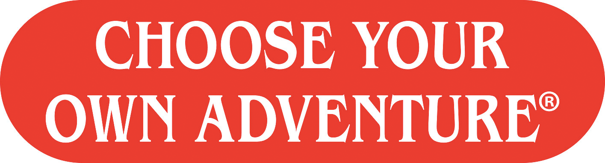

Midterm
Midterm Prompt (Choose One):
- Must be interactive with humans
- Must include some type of input, sensor information processing, and a recognizable output.
Prompt 1 - Pet Trick:
Create a prototype for an Artifical Human Companion (AHC). Think through the character and story that accompanies your AHC, i.e. visualize the world that your creation lives in. Is this AHC a pet of some sort? A partner/lover? A really needy alarm clock? Does she, he, they have a name? Gender preference? Are they autonomous? How do they relate with their human companions? Describe the person/persons your creation lives with or maybe it lives in isolation. Think through the relationship between the companions. What are the power dynamics between the two? While a working prototype is required, this is also an exercise in design fiction. Be as practical or fantastical as you want, all the while critically thinking through the relationship between humans and computers. Companions can be as anthropomorphic as you choose.
Prompt 2 - Escape:

Create a prototype for a multi step locking / unlocking mechanism. Design a system where each part is dependent on the outcome of the previous part. How do you design a system where your users can figure out each step without overt instruction. Think about how you want to frame this lock or puzzle? Is it a game? is it a security system? How general or personal is this system? What is revealed? What do they gain for their effort? Use multiple inputs and outputs to create your own barriers and revelations.
Prompt 3 - Choose Your Own Project:

Project of your own design and creation. Make art, make a product, make a system, make whatever is in your brain and/ or sketch pad. Guidelines:
Midterm Proposal:
-
Propose a project based on the midterm guidlines. Use as much audio and visual support to illustrate your plan and intended outcome. Keynote, Powerpoint, Video, and other presentation software are all acceptable. An extensive blog post is also acceptable. All proposal materials must be posted to your blog prior to in class presentations. Address the following questions:
- Concept: What do you intend on making? What is the intended interaction? How do you want others to experience your project?
- Plan: How will you make it?
- Bill of Materials: What do you need to purchase to complete the project?
Midterm Deliverables:
- Functional Prototype to be presented and playtested in class
- Documentation Video
- Blog Post
- In class Presentation:
- Presentation Guidelines (in no particular order):
- What did you make?
- How did you make it? Present conceptual framework behind project as well as technical details and process.
- Live Demo: Let others interact with your project
- Next steps (if any)